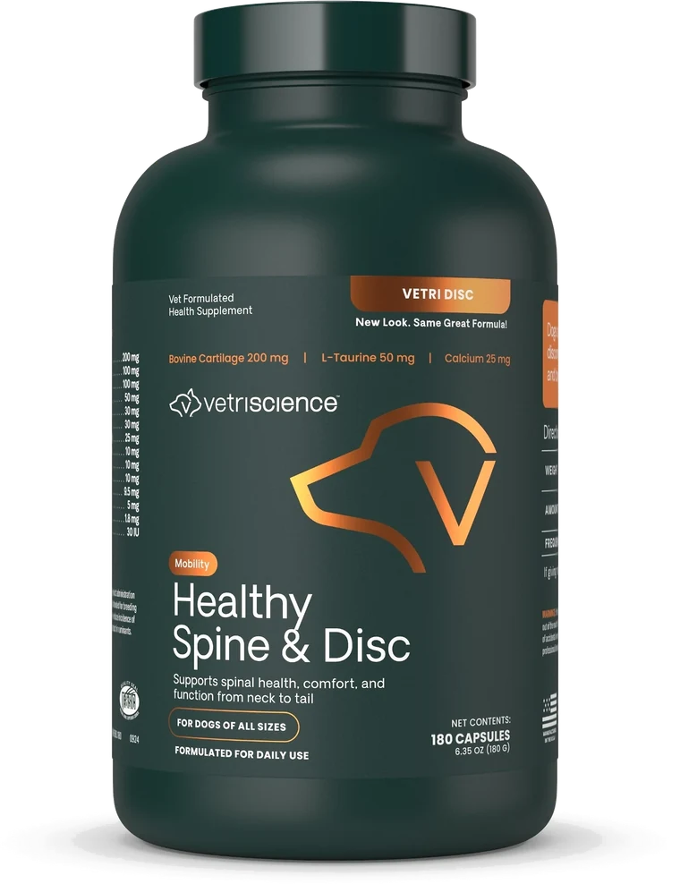
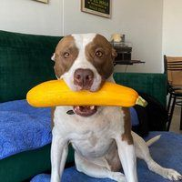
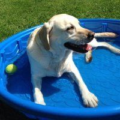

VetriDisc · Columna y discos
Hecho para la columna vertebral de tu perro
VetriScience VetriDisc está formulado exclusivamente para los discos intervertebrales. No para articulaciones en general: para la columna.
- 180 cápsulas
- Formulado por veterinarios
- Sin sabor, fácil de dar
Envío incluido · Pago con PSE, Nequi y tarjetas

Empecemos por aquí
¿Reconoces alguna de estas señales?
Muchos dueños lo confunden con vejez o pereza. Detrás de ese cambio suele haber algo que se puede apoyar con la nutrición correcta. Marca las que veas en casa.
VetriScience Laboratories · Vermont, EE.UU.
VetriDisc · Columna y discos
180 cápsulas por frasco, formuladas exclusivamente para los discos intervertebrales de tu perro, sin importar su raza ni tamaño.
- 13 ingredientes activos, con cartílago traqueal bovino como fuente concentrada de condroitín sulfato.
- Si tu perro no traga cápsulas, se abre y se mezcla con la comida. No tiene sabor ni olor perceptible.
- Sirve tanto para razas de columna larga como para perros grandes y perros mayores.
$179.900
Frasco de 180 cápsulas · Envío incluido a Bucaramanga y principales ciudades
Desde $999 al día para un perro de menos de 7 kg
Pago seguro con Wompi · Bancolombia, PSE, Nequi y tarjetas
Antes de comprar: lo ideal es mantenerlo al menos 3 meses continuos. Más abajo hay una calculadora que te dice cuánto te dura el frasco según el peso de tu perro, para que planees la recompra desde el primer pedido.
Lo que trae adentro
Qué lleva y para qué sirve cada cosa
13 ingredientes activos trabajando en tres frentes: aportar materiales, activar procesos y proteger el tejido de la columna.
200mg
Cartílago traqueal bovino
El ingrediente principal. Es la fuente más concentrada de condroitín sulfato, el mismo material que forma los discos intervertebrales. Aporta al cuerpo los componentes con los que mantiene ese tejido.
100mg
Vitamina C
Sin vitamina C no hay producción de colágeno, y el colágeno es la base del tejido conectivo. Es el punto de partida de toda la cadena de síntesis.
50mg
L-Taurina
Aminoácido esencial para fabricar tejido conectivo en la columna. Piénsalo como los ladrillos con los que el cuerpo construye la estructura del disco.
30mg
Manganeso
Activa las enzimas que producen glicosaminoglicanos, las moléculas que le dan elasticidad al cartílago. Sin manganeso ese proceso simplemente no ocurre.
30mg
L-Serina
Conecta las moléculas de glicosaminoglicanos con las proteínas del tejido. Es el puente que mantiene unida la estructura interna del disco.
10mg
Cola de caballo
Fuente natural de silicio orgánico, necesario para mantener la flexibilidad e integridad del tejido conectivo. Una planta con siglos de uso medicinal.
10mg
Vitamina B6
Participa en la función normal del sistema nervioso. Cuando un disco está comprometido, el nervio también se ve afectado, y la B6 trabaja específicamente en ese frente.
Minerales
Calcio, Magnesio y Zinc
Los tres trabajan juntos para el soporte óseo: calcio para la estructura, magnesio para el mantenimiento y zinc para la reparación del tejido.
Soporte
Vitamina D3 y Pepsina
La D3 permite que el calcio se absorba correctamente. La pepsina asegura que los ingredientes proteicos se digieran bien y lleguen donde tienen que llegar.
Hecho para los discos intervertebrales. No para articulaciones en general.
Calculadora
¿Cuánto le doy y cuánto me dura?
Escribe cuánto pesa tu perro y te decimos la dosis, cuántos días te alcanza el frasco y cuánto te cuesta al día.
Cálculo basado en la tabla de dosis impresa en el frasco. Si le toca más de una cápsula al día, divídela entre la mañana y la noche.
Dosis
3cápsulas al día
Te dura
60días con un frasco de 180 cápsulas
Costo por día
$2.998envío incluido
Cómo se lo das
Tabla de dosis del frasco
Se mezcla directamente con la comida. No tiene sabor ni olor perceptible, así que la mayoría de perros no nota ninguna diferencia.
| Peso del perro | Cápsulas por día | Duración del frasco |
|---|---|---|
| Menos de 7 kg | 1 cápsula | 180 días |
| 7 a 16 kg | 2 cápsulas | 90 días |
| 16 a 36 kg | 3 cápsulas | 60 días |
| Más de 36 kg | 4 cápsulas | 45 días |
Lo ideal es mantener el suplemento al menos 3 meses continuos. No reemplaza el tratamiento veterinario pero sí lo complementa.
Calcula tu recompra desde el primer pedido. Un perro de más de 36 kg consume el frasco en mes y medio, así que conviene pedir el siguiente antes de que se acabe.
Lo que nos han escrito
Opiniones de clientes
«No hace milagros, pero en nuestro caso ha sido de gran ayuda.»
Mi pitbull tiene espondiloartrosis desde hace un tiempo y había días en los que le costaba mucho levantarse, sobre todo en las mañanas. Llevamos varios meses usando VetriDisc y sí hemos notado cambios. Ahora se mueve con más facilidad y ya no se queja tanto cuando le tocamos la espalda.

«Mi Frenchie se lesionó un disco y el veterinario nos recomendó VetriDisc como apoyo durante la recuperación. Lo que más me gusta es que puedo abrir la cápsula y mezclarla con la comida porque es bastante mañoso para tomar suplementos.»
«Mi labrador tiene 9 años y desde hace un tiempo le costaba cada vez más subir al carro. Empezamos a darle VetriDisc por recomendación de otro dueño de perros mayores y la diferencia ha sido bastante notoria. Lo veo más activo.»

«Excelente producto.»
«Es real que funciona, sean consistentes.»
Preguntas frecuentes
Lo que más nos preguntan
¿En cuánto tiempo se notan los resultados?
Los suplementos estructurales necesitan tiempo. La mayoría de dueños empieza a notar cambios entre las 4 y 8 semanas de uso continuo. Para condiciones crónicas como la discoespondiloartrosis, lo que hace la diferencia es el uso sostenido a largo plazo.
¿Se puede combinar con otros medicamentos?
En la mayoría de casos sí. Es un suplemento nutricional, no un medicamento. Muchos veterinarios lo recomiendan junto a tratamientos como el Trarnic. Siempre es buena idea confirmarlo con tu veterinario si tu perro tiene un protocolo específico.
¿Cómo se lo doy si mi perro no traga cápsulas?
Sin problema. La cápsula se abre y el contenido se mezcla con la comida de siempre. No tiene sabor ni olor perceptible y la gran mayoría de perros no nota ninguna diferencia.
¿Hacen envíos a toda Colombia?
Sí, a todas las ciudades principales. El tiempo varía según el destino, pero generalmente llega entre 2 y 5 días hábiles. Escríbenos por WhatsApp si quieres confirmar disponibilidad a tu ciudad.
¿Qué métodos de pago aceptan?
PSE, Bancolombia, Nequi, Daviplata y todas las tarjetas débito y crédito a través de Wompi, la plataforma de pagos de Bancolombia.
¿Dudas antes de pedir?
Escríbenos, contestamos nosotros
No hace falta que compres para preguntar. Cuéntanos el caso de tu perro y te decimos si esta fórmula aplica.
- Envío a todo Colombia
- PSE, Nequi y tarjetas
- Producto original importado
- Asesoría por WhatsApp